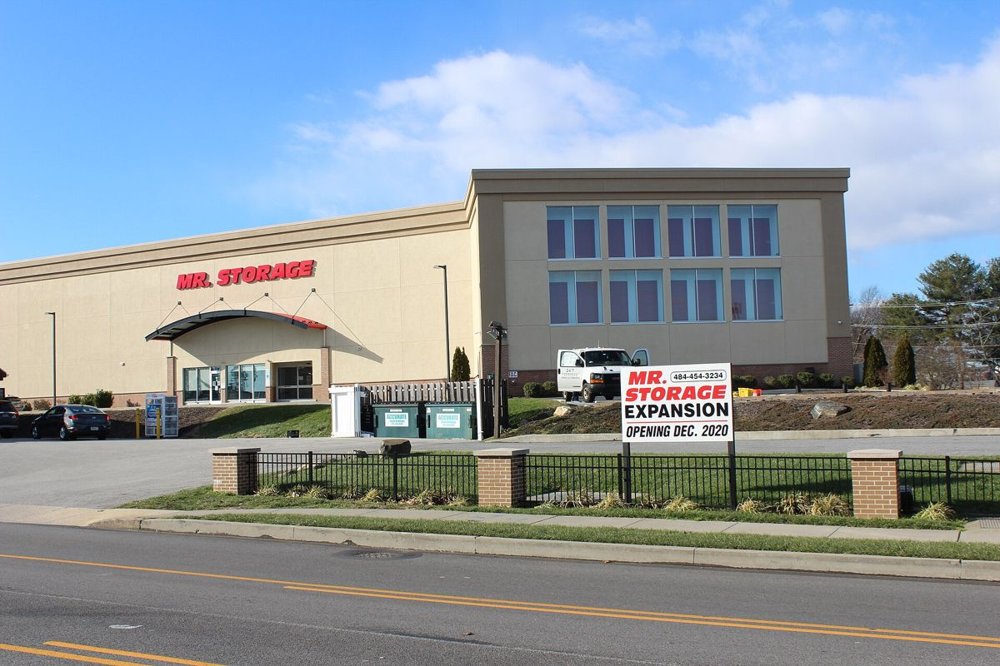
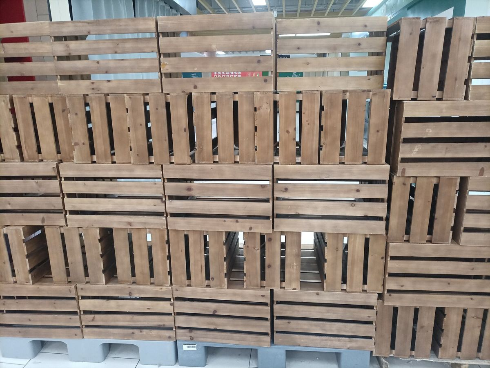

Not every move goes straight from one front door to the next. A lease might end before the new one starts. A villa might need repainting. A family might be relocating abroad for a year and want to keep their furniture. In all of these cases, movers often offer storage as an add-on. It is convenient, but it adds a new set of questions to the quote.
UNIT ACommon reasons for storage
- A gap of a few days or weeks between leaving one home and moving into the next
- Renovation or deep cleaning at the new property
- Downsizing to a smaller flat while keeping larger furniture for later
- Temporary relocation abroad or a long trip
- Waiting for an international shipment to be arranged
Each situation affects how long storage will last, how often you need access and how the price is structured.
UNIT BHow storage is priced
Movers usually price storage in one of a few ways:
- By volume, often measured in cubic metres or cubic feet
- By container or vault, where your goods go into a sealed wooden box or unit
- By space, such as a fixed-size room in a self-storage facility
- As a monthly fee, sometimes with a minimum period
On top of the storage fee, there are usually handling charges: moving items into the warehouse, and again out of it. If storage is between two moves, you may effectively pay for two moves plus the time in between.
UNIT CWhat the quote should state
A clear storage quote will tell you:
- The storage fee and the billing period
- Any minimum storage term
- Handling charges in and out
- Whether goods are stored in sealed containers or open racks
- Whether the facility is climate-controlled
- How you can access your items and how much notice is needed
- What cover applies while goods are in storage
If any of these are missing, ask. Storage can run longer than planned, so understanding the monthly cost and access rules is important.
UNIT DClimate control matters in the UAE
Summer heat and humidity can damage wooden furniture, leather, electronics, documents, artwork and musical instruments. Ask whether the warehouse is air-conditioned and whether humidity is managed. Some facilities offer climate control as standard; others charge extra or only provide it in certain sections. For short storage of a few days, this may matter less, but for months it can make a real difference.
UNIT ESealed containers versus open storage
In container storage, the crew loads your goods into wooden vaults at your home or the warehouse, seals them and stores them as a unit. You generally cannot access individual items without the movers opening the container. In open or self-storage, your belongings sit in a room or unit, and you may be able to visit and retrieve items yourself.

Container storage is often tidier and well suited to long periods. Self-storage is more flexible if you will need things during the storage period.
UNIT FInventory and condition records
Before anything goes into storage, insist on an inventory. Each box and large item should be listed and numbered. Photograph valuable furniture and note any existing damage. When the goods come out, check against the same list. This is especially important for longer storage, where it may be months before you see your belongings again.
UNIT GInsurance during storage
Basic moving liability may not cover goods while stored, or only for a limited period. Ask whether your cover extends to storage, what it costs and what is excluded. If you have home contents insurance, check whether it covers goods held in a third-party warehouse.
UNIT HComparing storage quotes
Because storage combines a move-in, a monthly fee and a move-out, it helps to calculate the total for your expected period, and for a longer period in case plans slip. Compare:
- Total handling charges in and out
- Monthly fee multiplied by your expected months
- Climate control and security
- Access rules and fees
- Cover and exclusions
To collect written storage-inclusive quotes from more than one mover, you can use movewiseuae.com/mover-quotes and mention the storage period in your request.
UNIT IReducing storage costs
- Sell, donate or give away items you do not need before storage
- Pack efficiently and fill boxes fully so they stack well
- Keep the storage period as short as realistic, but plan a margin
- Store only what is worth more than the cost of storing it
- Keep frequently needed items with you rather than in storage
UNIT JA note on prohibited items
Storage facilities usually prohibit perishables, flammable liquids, gas cylinders, chemicals and some batteries. Movers will often refuse to pack them. Dispose of these safely before the move. For guidance on hazardous waste and recycling in Dubai, the Dubai Municipality publishes official information.

UNIT KGetting things out again
Plan the retrieval like a second move. Book the delivery date early, especially if it falls in a busy period. Arrange building permits and lift slots at the new home. Check the inventory as items arrive and note any problems before the crew leaves.
UNIT LSummary
Storage is a useful add-on when your move does not happen in one smooth step. Know how it is priced, check climate control and access, insist on an inventory and confirm cover. With those details in writing, storage becomes a planned part of your move rather than an open-ended cost.